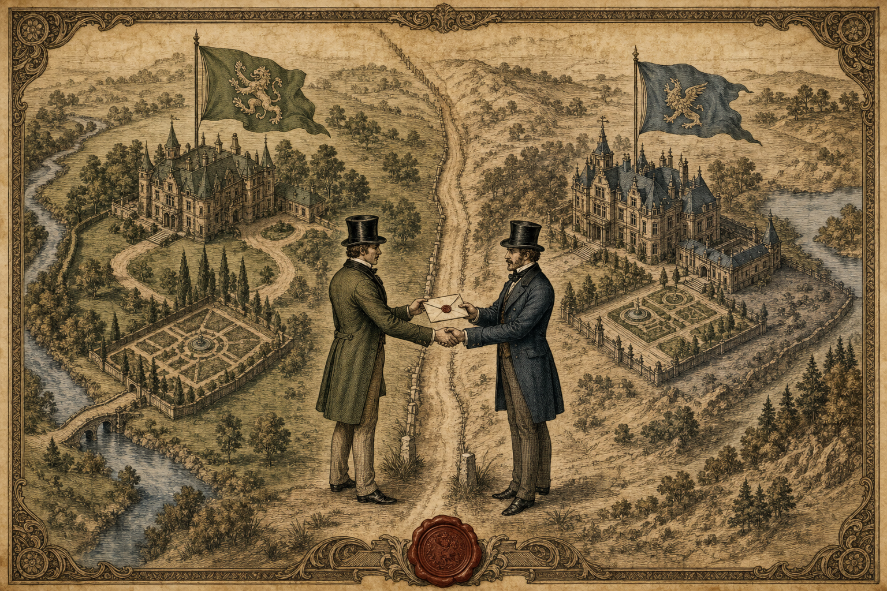
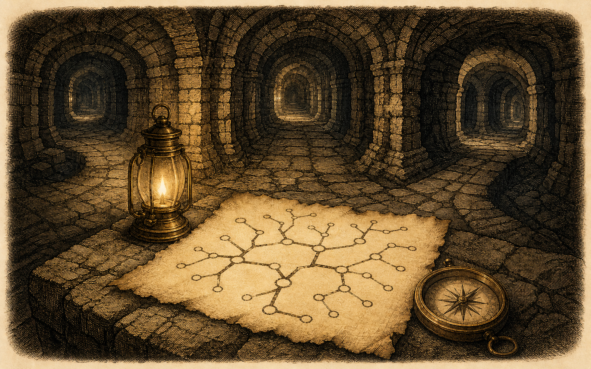

"When you have eliminated the impossible, whatever remains, however improbable, must be the truth."
Case Files
倉庫と受付係、二通の手紙 — S3とCloudFrontの誤解録
Static website hosting が Disabled なのにサイトが見える謎。Origin domain の正体。そして二種類のCNAMEを巡る混乱——Case No.1 に先立つ調査で解いた誤解の数々を、後学のために記録する。
独自ドメインとHTTPSの謎 — 名を名乗る資格の証明
お名前.comで手に入れた一片の名前が、Route 53・ACM・CloudFrontを経て、いかにして「本物」と証明されるに至るか。DNSという案内人は必ずしも正直者ではない——その盲点と、証明書という門番の推理法を解き明かす。
サブドメインと秘匿された保管庫 — S3静的サイト公開の手引
領地(ドメイン)に離れを増築するのに、追加の登記は要らない。台帳に一行書き足すだけである。非公開のS3をOACという「社員証」でCloudFrontにのみ開かせる、現代の定石を記録する。

隣人に貸した一区画 — 他人の資源に我が名を与える委任の全記録
同期のS3サイトを、我がドメインのサブドメインで公開せよ——資源と名前の持ち主が別人となったとき、何が起き、誰が何をするのか。S3が倉庫にすぎぬ理由から、DNSという台帳、検証CNAMEという封蝋、証明書の発行と装着、Aliasの内実、そして区画の鍵ごと渡すNS委任まで。挿絵九葉を添えた全記録。
次なる調査
次に学ぶ事柄がここに綴られる予定である。新しい記事は articles/ に1ページ追加し、この一覧にカードを1枚足すだけでよい。
Exhibition
Linux Story Quest — コマンドで街をひらく
Linuxコマンドを打って街を探索する学習ゲーム。cd で移動し ls で見渡し、36の課題を通じてコマンドが「呪文」から「道具」に変わる。HTML/CSS/JavaScriptのみで制作。

Git Dungeon — リポジトリの迷宮
Gitコマンドで迷宮を踏破するRPG。ブランチは分岐路、コミットは足跡、マージは合流点。LV・HP・EXPを携えて、バージョン管理の概念を身体で覚える。HTML/CSS/JavaScriptのみで制作。
次なる制作物
今後の課題や自作ツールがここに並ぶ予定である。works/ に1フォルダ追加し、この展示室にカードを1枚足すだけでよい。